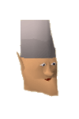
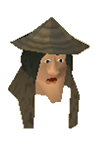

")
Tree Gnome Stronghold (Members)
Introduction | Location | Points of Interest | Personalities
Quests | Defenders of the Grand Tree | Miscellaneous
Quests | Defenders of the Grand Tree | Miscellaneous
Introduction

Most of the gnomes in RuneScape live in and around the Grand Tree, building platforms on the branches and hollowing out the trunk for spacious rooms. They are a friendly bunch of creatures and incredibly inventive: some of their notable achievements include the gliders that allow fast and convenient travel across RuneScape, their remarkable cocktails and their even more delicious food (even though toad is a staple ingredient). Without the gnomes, it is almost certain that technology and culture would not have advanced as far as it has.
Location

South and south-east of the Stronghold is the twin capital of Kandarin, West Ardougne and East Ardougne.
To the east, past Baxtorian Falls and McGrubor's Wood is Seers' Village and Camelot, where King Arthur is taking some time out before returning to England in its time of need.
Points of Interest

In the north-west is the Gnome Ball field, where the gnomes allow humans to try their hand at this peculiar sport.
In the south-east corner of the Stronghold is the Gnome Stronghold Agility Course. The gnome armies are especially well-trained, and all of them must meet the approval of the gnome trainers, who shout encouragement from the sides.
The Grand Tree is in the north-east of the Stronghold, and is the centre of gnome culture in RuneScape. On the first floor you will find the remarkable cuisine of Gianne's Restaurant and the tasty tipples of Blurberry's Bar. Both Gianne and Blurberry are constantly in need of staff to help out, so if you want to learn the secrets of the gnomish gastronomic arts you might like to pay them a visit.
On the top level of the Grand Tree is the local Gnome Air glider, which will take those that have completed The Grand Tree to almost any Gnome Air landing point in RuneScape.
Personalities

Though gnomes are very different from humans in many ways, they still have a king. King Narnode Shareen is one of the wisest of all the gnomes, and is very keen to establish good relations with the human kingdoms. His job is not simple, though, as there are many within the Stronghold who would like to see gnomes as lords over the humans.
|

Glough is the current chief of the gnome armed forces, and one of the main supporters of gnome supremacy. It is his duty to ensure that the Grand Tree is kept safe from all dangers, so it's quite understandable that he is suspicious of anyone taller than himself.
|
|
| King Narnode Shareen is almost always in his throne room on the ground floor of the Grand Tree. | Glough can be found in his tree house just south of the Grand Tree. |

Daero is also in the gnome military, second in line after Glough. He is much more open to friendship with humans and other non-gnomes, though, so any shift in power between the two should signal a significant change in gnome diplomacy.
|

Blurberry is an icon of gnome culture, for it is in his bar that the many gnomish cocktails can be purchased. He is a friendly gnome, and always looking for talented staff. The shop to the east of his bar also sells ingredients and recipes for these peculiar beverages.
|
|
| Daero can be found sampling the treats in Blurberry's Bar. | Blurberry can be found watching over his bar on the first floor of the Grand Tree. |
|

Gianne's Restaurant is famed throughout RuneScape - especially among gnomes - for the quality of its food and the strange delicacies that gnomes so enjoy. Gianne is, like Blurberry, always after staff to help run the restaurant. Funch's Fine Groceries also sells Gianne's cookbook and many of the ingredients needed to make these treats.
|

The tortoises that the gnomes have recently begun using in their military must be trained to become other than the docile and passive creatures that they naturally are. For this, Trainer Nacklepen's notably brutal approach has proven surprisingly effective. Essentially, he shows them nothing but cruelty and beats them down until they are as callous as he is.
|
|
| Aluft Gianne can be found in his restaurant on the first floor of the Grand Tree. | Trainer Nacklepen can be found wielding a cruel staff in the tortoise enclosure north of the swamp. |
Quests
The following quests can be started in the Tree Gnome Stronghold:
- The Grand Tree (Members)
- Monkey Madness (Members)
- The Eyes of Glouphrie (Members)
Defenders of the Grand Tree

The tunnels beneath the Grand Tree feature creatures that the gnomes allow to live on the grounds that they provide some protection against invaders from beneath the earth. Giant rats are by no means adept defenders, though, as they make easy prey for almost every adventurer.
|

Despite their short stature and preference for the greener and cleaner parts of the world, gnomes make excellent soldiers, especially because they can be summoned up to battle in numbers. The gnome guards of the Stronghold are as numerous as you would expect, and will fight to the death against anyone that thinks gnomes are weak.
|
|
| Giant rats can be found in the tunnels under the Grand Tree. | Gnome guards can be found throughout the Tree Gnome Stronghold. |

Bats are nocturnal creatures that rely on their sense of hearing to find their prey, for this reason they tend to prefer living in caves, where they can hear echoes of footsteps and their own cries to pinpoint precisely where their prey is. Their wings are their weakness, and arrows are excellent at puncturing them.
|

Terrorbirds resemble the chompies loved by ogres, but are much more vicious. They are trained as riding beasts by the gnomes, who then marshal them into regiments and charge into glorious battle. Without a rider they are still dangerous foes, and can be assigned as a Slayer task.
|
|
| Giant bats can be found in the tunnels beneath the Grand Tree. | Terrorbirds can be found in the central area of the Stronghold. |

What could be more terrifying than a terrorbird? A terrorbird with a gnome on top! These cavalry soldiers are among the finest soldiers the gnomes can muster, and lead their charges into battle armed with spears or bows to decimate their enemies. Mounted terrorbird gnomes can also be killed for Slayer experience when assigned terrorbirds.
|

Tortoises are generally very peaceful creatures, but the gnomes have discovered a way to turn them into bloodthirsty beasts of burden for their soldiers. These tortoises have yet to make that transformation, though, and are instead simply in training (which generally involves beating them with sticks and other implements).
|
|
| Mounted terrorbird gnomes can be found in the central area of the Stronghold. | Tortoises can be found in an enclosure north of the swamp. |

Once Trainer Nacklepen has finished his brutal work upon the tortoises and the gnomes are in place upon their back, the tortoise becomes a mighty battle tortoise. These lumbering beasts are the perfect platform for the gnomes to take the battle to the enemy, blasting them with Magic and arrows, as well as the tortoise's own fearsome attacks.
|
| Battle tortoises can be found in an enclosure north of the swamp. |
Miscellaneous
- Gnome Cooking is an excellent way of not only training your Cooking, but also giving you a nice selection of food and drinks to keep you fed when fighting monsters.
- Speaking of which, you may like to offer your services to Aluft Gianne Jnr, in the Gnome Restaurant.
- There are a number of rare trees and normal trees within a very short distance of a bank.
- Flax can be found close to a spinning wheel, which is also very close to a bank.
- To get your Agility skill trained up, the Gnome Stronghold Agility Course is the only level 1 course in RuneScape.
- Brimstail, the gnome magician, will teleport you to the Rune Essence mine.
- Swamp toads can be found in great numbers by the swamp in the north of the Stronghold. You can then use these to either prepare some gnome food, or in an Agility Potion.
- Aside from the Gnome Air gliders, you can use the Spirit Tree to teleport you across the world. Note that you must have completed the Tree Gnome Village and The Grand Tree quests to use the Spirit Tree Network.
- Once you have completed The Grand Tree you will gain access to the mine beneath the Grand Tree. This features a plentiful supply of various ores.
- There is a level 37 Agility shortcut in the north-east of the Stronghold. This will take you close to the Barbarian Outpost.
- There is a fruit tree patch north of the Gnome Stronghold Agility Course.
- After you have completed Monkey Madness, you can return to Crash Island, and then to Ape Atoll, by talking to Daero.

More articles in
Cities and Towns
|
|